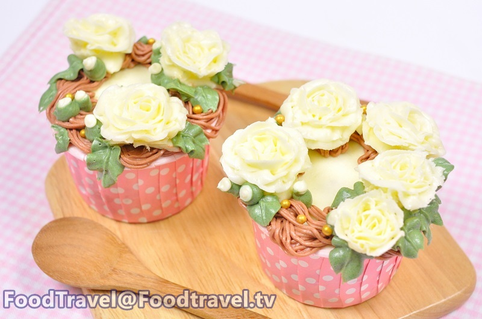

วัตถุดิบสำหรับคัพเค้กดอกมะลิซ้อน สำหรับ 5 ชิ้น เวลา 1 ชั่วโมง
• เนยขาว 250 กรัม
• เนยจืด 200 กรัม
• น้ำตาลไอซิ่ง 125 กรัม
• เกลือ 1 ช้อนชา
; • คัพเค้ก 5 ถ้วย
• สีผสมอาหาร สีเขียวและสีน้ำตาล
อุปกรณ์ที่ใช้
หัวบีบเบอร์ 101 หัวบีบเบอร์ 67 หัวบีบเบอร์ 233
วิธีทำคัพเค้กดอกมะลิ
ตีเนยขาวกับเนยจืดด้วยความเร็วระดับปานกลางจนเข้ากัน
.ค่อยๆเติมน้ำตาลไอซิ่งจนหมด ตีต่อประมาณ 5 นาที และใส่เกลือลงไป ตีจนส่วนผสมเนียนเข้ากัน
นำบัตเตอร์ครีมมาผสมสีเขียวเพื่อทำใบ สีน้ำตาลสำหรับทำเถาวัลย์ และบัตเตอร์ครีมสีขาวทำเป็นดอกมะลิ
นำบัตเตอร์ครีมมาใส่หัวบีบที่เตรียมไว้
นำบัตเตอร์ครีมสีขาวมาบีบให้เป็นดอกไม้ แช่เย็นให้เซ็ทตัว แล้วบีบบัตเตอร์ครีมสีน้ำตาลลงบนคัพเค้กเป็นเถาวัลย์ วางดอกมะลิแล้วบีบบัตเตอร์ครีมสีเขียวเป็นใบไม้
ขอขอบคุณข้อมูลและภาพประกอบจาก
เว็บไซต์:http://www.foodtravel.tv/recipe.aspx?viewid=4338
Copyright © EAT&EAT nc. สงวนลิขสิทธิ์